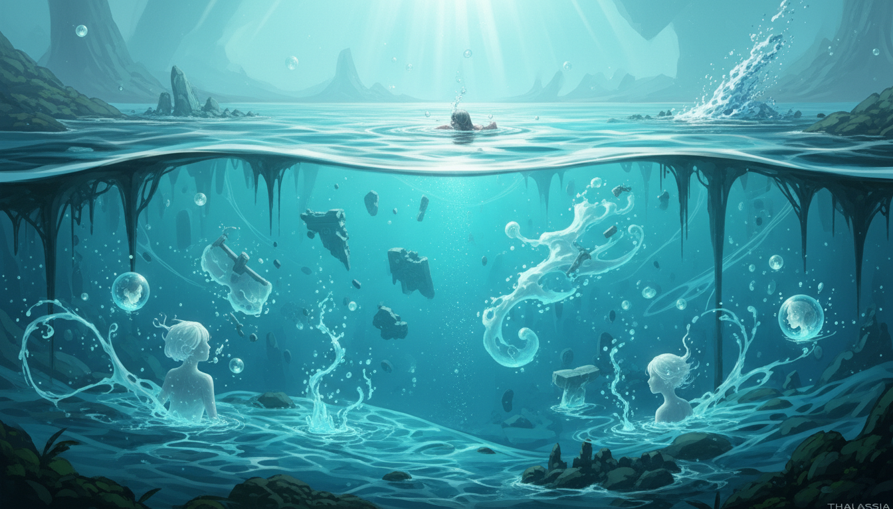
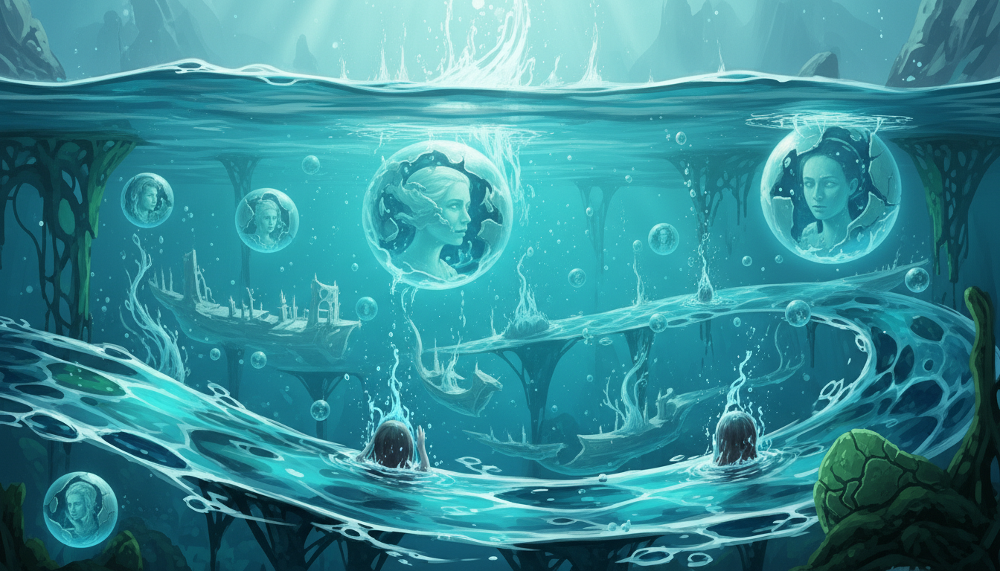
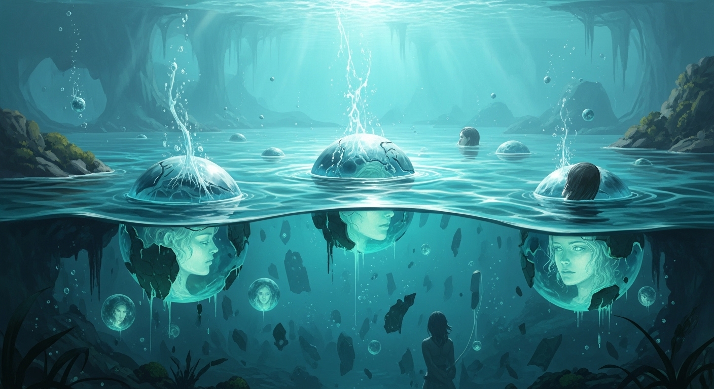

Thalassia es el plano líquido donde fluyen los recuerdos del universo. Sus corrientes no solo transportan agua, sino también memorias, emociones y fragmentos de antiguas eras. Quienes logran escuchar su murmullo pueden recordar lo que jamás vivieron.
← Volver a los planos


Thalassia es el río eterno de memorias, donde cada gota guarda el eco de un instante que el universo decidió recordar. Naira, esencia de transformación, teje aquí los hilos líquidos que conectan el pasado con el porvenir, permitiendo que los aromas cósmicos se disuelvan en corrientes de conciencia pura.
“El agua no olvida; transforma el dolor en corriente y el silencio en canción.”
Trivia cósmica: En Thalassia, los ríos fluyen hacia arriba cuando alguien recuerda un amor que nunca fue pronunciado.